El complemento perfecto para que tu cabello se vea más lleno, con movimiento y un acabado natural.
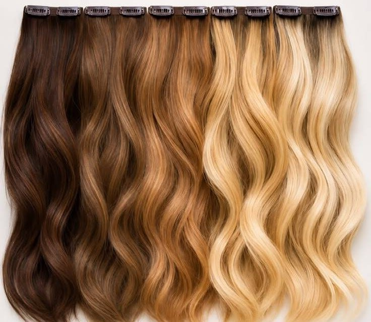
Elige el tono más parecido a tu cabello, o uno un poco más claro si quieres darle luz.
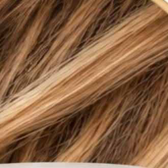
Con cabellos 100% naturales, con diferentes grosores y hebras, que recrean la riqueza del cabello real.
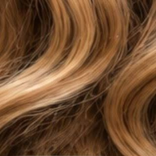
Al mezclarse con tu propio cabello, la variedad de hebras y texturas ayuda a que las ondas mantengan su forma por más tiempo.
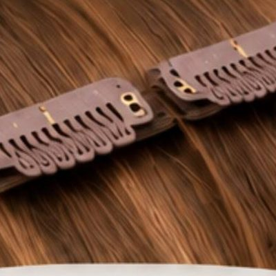
Se adapta de forma natural, aportando cuerpo, volumen y un acabado más pulido y duradero.
A veces una sola cortina de cabello natural es suficiente para rellenar las zonas con poca densidad y conseguir un acabado más abundante.
Un Bob al que le falta cuerpo en algunas zonas.
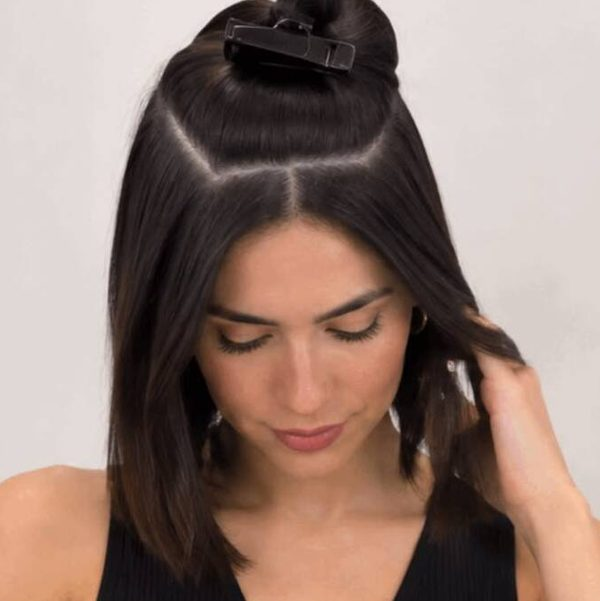
2Se levanta la parte de arriba y se deja libre la zona donde va la cortina.
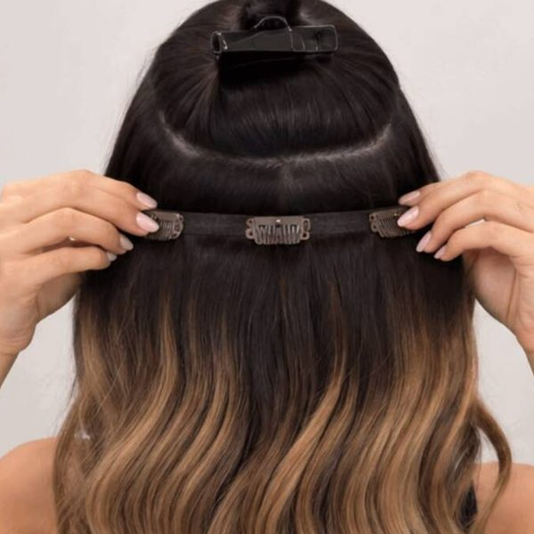
3La cortina se adapta al ancho necesario y se integra con el corte.
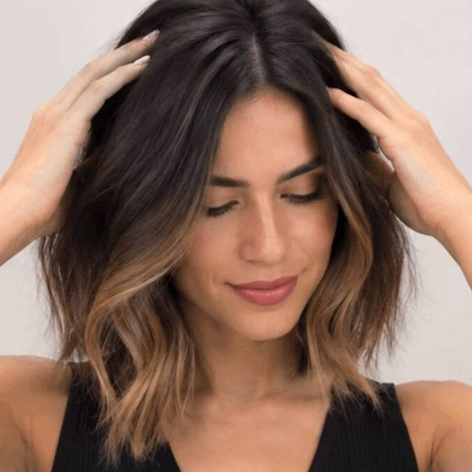
4Más cuerpo y un acabado uniforme, sin cambiar tu corte.
Un detalle técnico. Lo ideal es recortar el largo de la extensión para igualarlo al Bob y elegir una cortina del ancho adecuado, sin cortar la banda de sujeción.
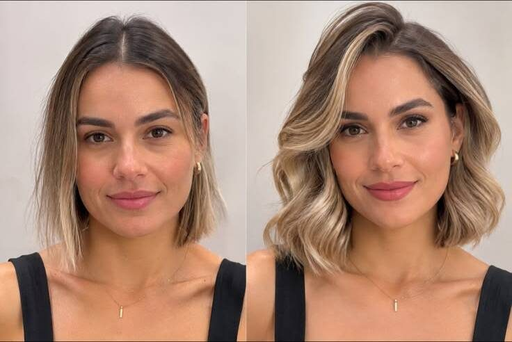
AntesDespuésSi tienes el cabello oscuro y quieres darle luz, dimensión o un cambio de look sin alterar tu color natural, puedes usar cortinas en tonos un poco más claros.
Se colocan de forma estratégica y se mezclan con tu propio cabello, con un efecto muy parecido a un balayage, sin decoloración. También funciona en un Bob o un Lob.
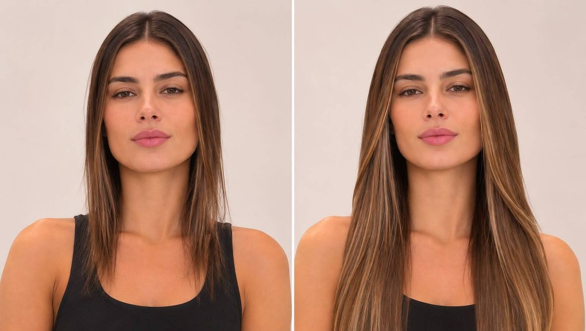
AntesDespuésTambién son ideales para dar un poco más de largo, rellenar las puntas y conseguir un cabello visualmente más abundante.
Este cambio es con el set completo de 5 piezas.
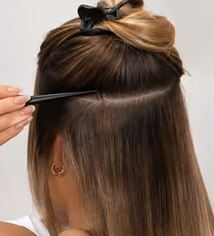
1Divide el cabello con una peinilla y sujétalo con pinzas.
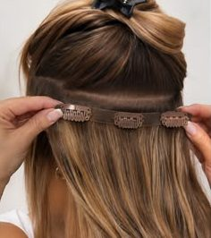
2Coloca la extensión alineando la banda con la separación.
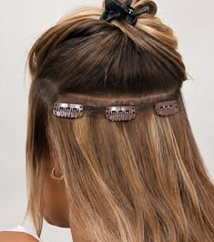
3Presiona los clips de arriba hacia abajo hasta que queden bien asegurados.
Para que conozcas cómo está confeccionada la extensión, su acabado y su sistema de sujeción.
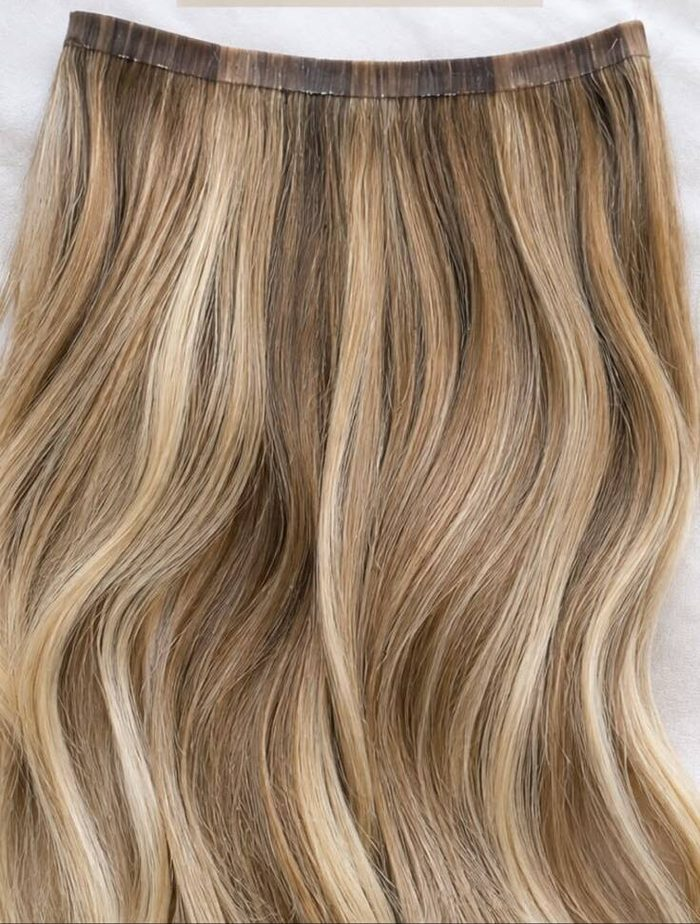
El lado del cabello, el que queda a la vista. Caída y movimiento de cabello real.
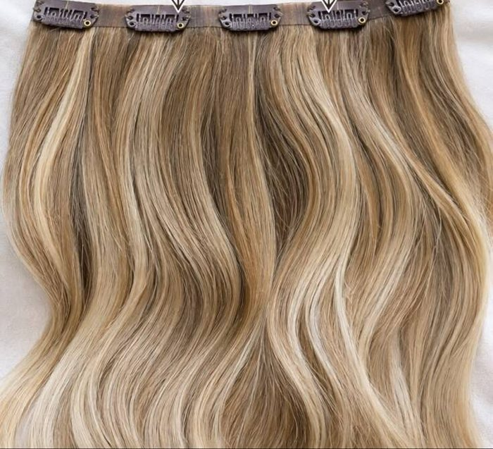
El lado de sujeción. Una banda plana que queda oculta bajo tu cabello y clips que se ajustan con firmeza.
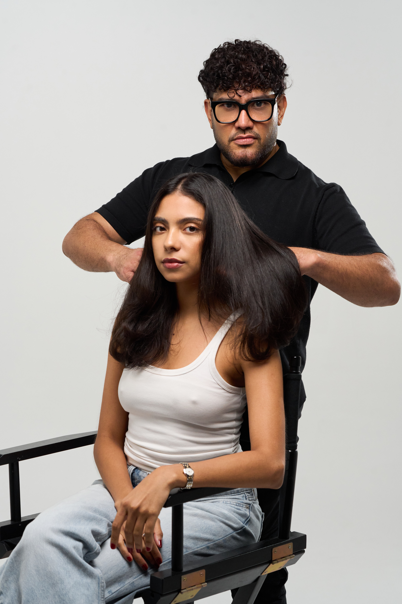
Foto provisional, se cambia por una de la colección de cabelloLo maravilloso es que podemos personalizarlas según las necesidades de cada mujer, integrándolas con su propio corte para conseguir un acabado natural. No se trata solamente de alargar el cabello, sino de darle forma, volumen y abundancia donde más lo necesitas.
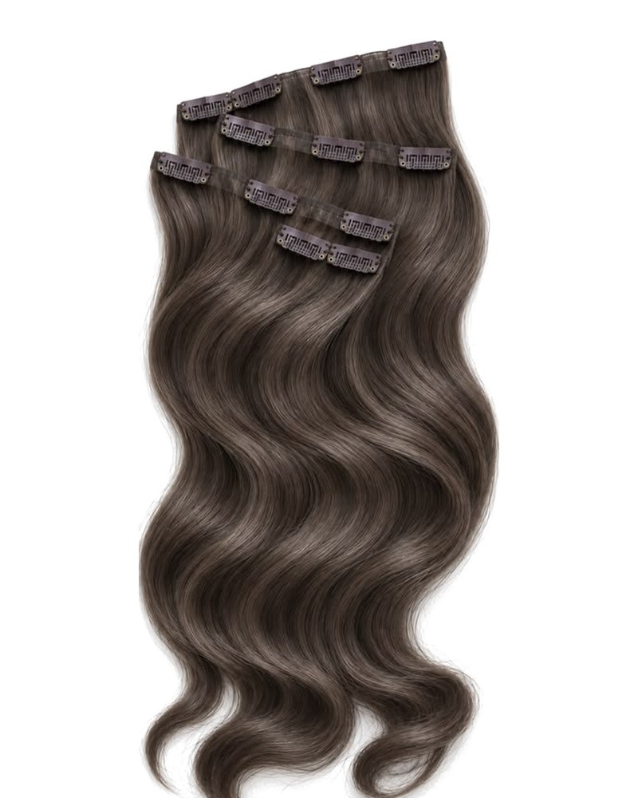